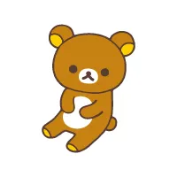

☁好天气，适合收集甜甜的回忆。
这次旅行0米
0
最远 0 米
左右换道向上跳跃向下翻滚
A SWEET LITTLE JOURNEY
休息一下，再出发。
慢慢来，每一步都算数。
✧ 新的最远旅行 ✧
旅行距离0米
收集布丁0个
我的纪录 0 米
TAKE IT EASY
在这里歇一小会儿。
布丁和小镇，都会等着你。
正在打开甜梦小镇…

RILAKKUMAa little sweet escapeA SWEET LITTLE JOURNEY
慢慢来，每一步都算数。
✧ 新的最远旅行 ✧
我的纪录 0 米
TAKE IT EASY
布丁和小镇，都会等着你。